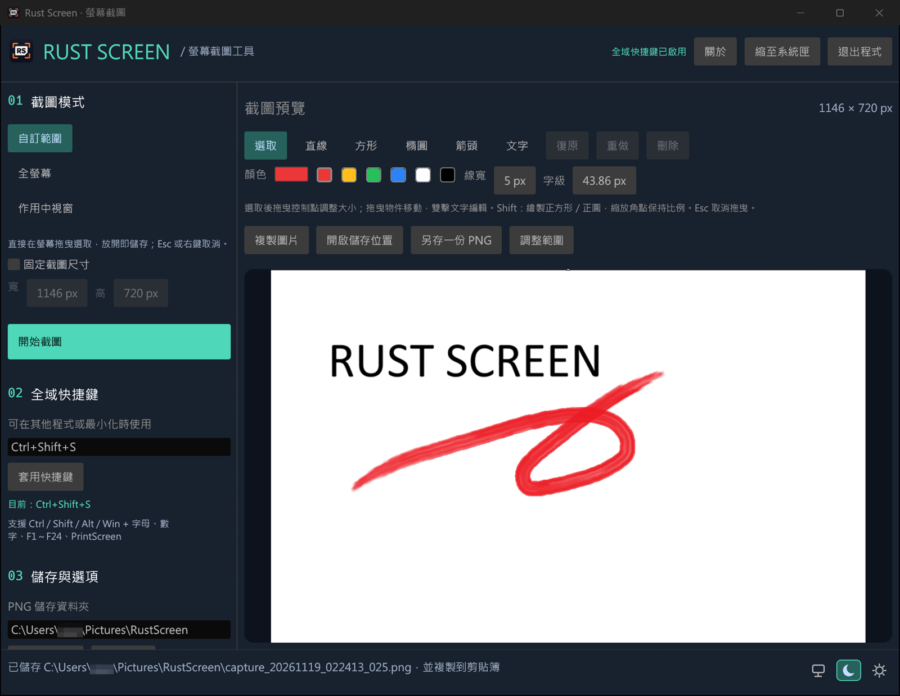
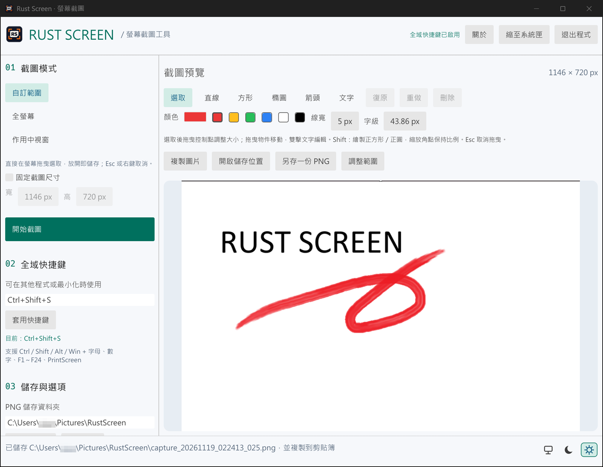
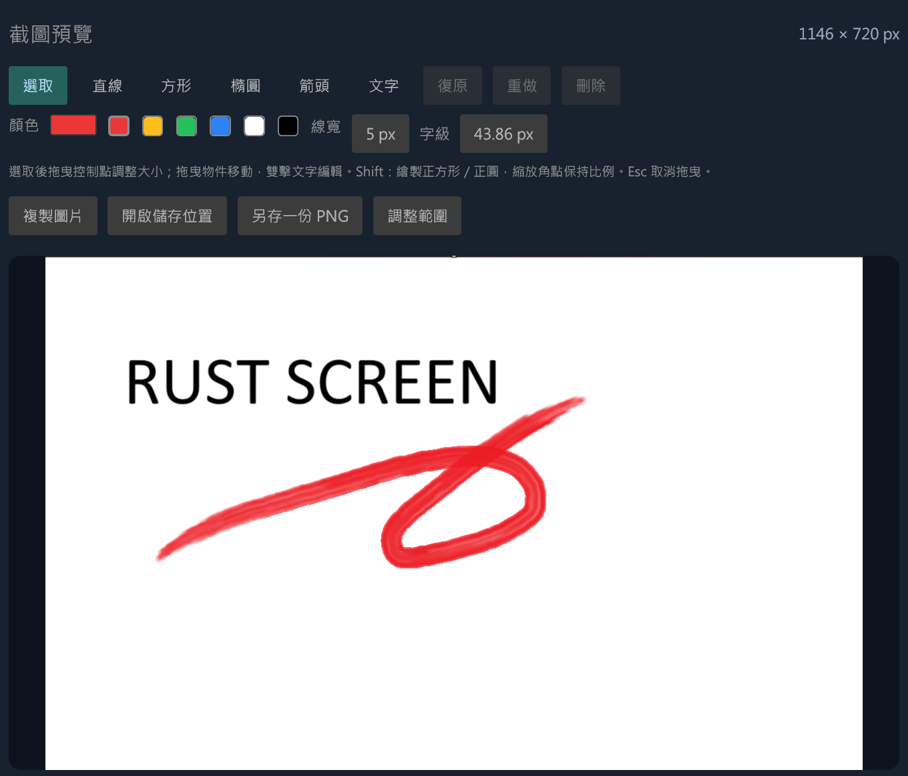
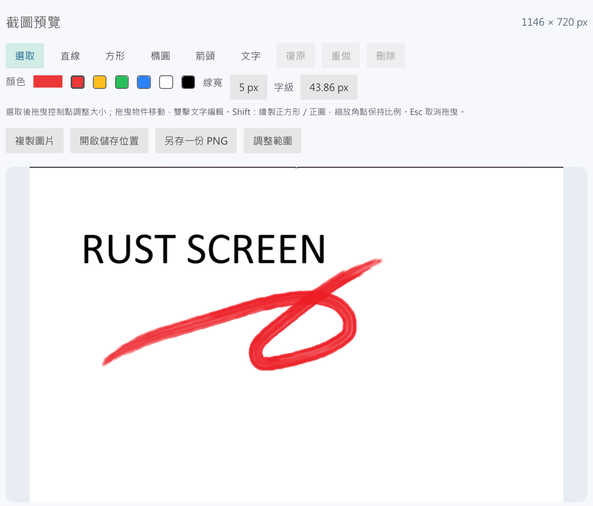

自訂範圍
桌面凍結並覆上暗色遮罩，直接在螢幕上拖曳，可跨越多個螢幕，選框即時顯示像素寬高。Esc 或右鍵取消；單純點一下不會誤存 1 像素圖片。
Windows 10 / 11 · 以 Rust 打造
Rust Screen 是輕量的桌面截圖工具。在任何程式中按 Ctrl Shift S，直接在螢幕上框選，放開滑鼠就存成 PNG 並複製到剪貼簿；截完能在預覽裡畫框、加箭頭、寫中文註解。另附 MCP 伺服器，讓 Claude 等 AI 助理也能看見你的螢幕。


三種截圖模式
桌面凍結並覆上暗色遮罩，直接在螢幕上拖曳，可跨越多個螢幕，選框即時顯示像素寬高。Esc 或右鍵取消；單純點一下不會誤存 1 像素圖片。
一次擷取所有螢幕，包含位在負座標的延伸螢幕，按下快捷鍵就直接存檔。
擷取觸發快捷鍵當下的前景視窗；從主視窗按「開始截圖」時，會在本程式隱藏後擷取。
功能
預設 Ctrl+Shift+S，在其他程式中或本程式最小化時都能觸發。可改成 Alt+F9、Ctrl+PrintScreen 等組合，衝突時保留原設定。
需要精確大小時，先輸入寬高，選框會跟著游標移動定位。存檔後還能「調整範圍」，輸入 X、Y、寬高再裁切另存。
以實體像素擷取，支援跨螢幕選取與不同縮放比例。預覽依視窗大小縮放，輸出的 PNG 仍保留原始解析度。
自動命名、不覆寫既有檔案，可自訂儲存資料夾。存檔同時複製到剪貼簿，直接貼到聊天或文件。
按 X 會縮到右下角系統匣，快捷鍵照常可用。點擊圖示即可喚回；選「退出程式」才會真正結束並釋放快捷鍵。
再次開啟程式時，不會多跑一份，而是喚回原本的主視窗（即使它在系統匣裡）並帶到最前景。
三種主題即時切換並記住選擇；「跟隨系統」會在 Windows 切換深淺色時自動同步。這個網頁右上角也有同樣的切換鈕。
主題、快捷鍵、模式、資料夾、固定尺寸、延遲與標註樣式都會保存，變更後約 0.8 秒自動寫入。
預覽標註
不必再開影像軟體。預覽上方的工具列提供直線、空心／實心方形與橢圓、箭頭與多行中文文字，支援常用色票、自訂顏色、線寬與字級。


網頁示範 · 在圖上拖曳繪製 · 按住 Shift 畫正方形／正圓 · Ctrl+Z / Ctrl+Y
MCP 伺服器 · rust-screen-mcp.exe
附帶獨立的 Model Context Protocol 伺服器，透過 stdio 讓 Claude Code、Claude Desktop 等 MCP 用戶端擷取這台電腦的畫面。它和主程式共用同一套擷取核心，但不開視窗、不佔用單一執行個體鎖定；主程式有沒有在執行都能用。
list_monitors
各螢幕的桌面座標、工作區、DPI 縮放與主螢幕標記，索引由左至右。
list_windows
可見的頂層視窗（依 Z 順序）：handle、標題、執行檔、範圍、是否最小化或在前景，可依標題篩選。
capture_screen
擷取指定螢幕；省略則擷取橫跨所有螢幕的整個桌面。
capture_window
依 handle 或標題擷取視窗。背景視窗以 PrintWindow 請視窗自行繪製：不拍到遮擋物、也不搶焦點，失敗時自動改從螢幕擷取。
capture_region
擷取桌面座標矩形，適合放大看清楚小字或局部細節。
select_region
請你親自在螢幕上拖曳選取（與主程式相同的遮罩），也可指定固定寬高；Esc 取消。
rust-screen-mcp.zip，解壓縮後把 rust-screen-mcp.exe 放到固定位置（例如 C:\Tools\）。claude mcp add rust-screen -- "C:\Tools\rust-screen-mcp.exe"加入 claude_desktop_config.json：
{
"mcpServers": {
"rust-screen": { "command": "C:\\Tools\\rust-screen-mcp.exe" }
}
}幫我看一下 Excel 視窗裡第三季的數字，順便存一張原圖。
list_windows title_contains: "Excel"
capture_window handle: 3087762, save: true
第三季營收為 …（已另存原始解析度 PNG）
每次擷取完成，被擷取的範圍會閃一下約 0.7 秒的橘色邊框；就算把用戶端設成「永遠允許」，你也知道 AI 正在截圖。邊框不搶焦點、滑鼠可穿透，也不會被拍進任何截圖。
回傳圖片預設最長邊 1568 px，可用 max_dimension 調整；PNG 超過 3.5 MiB 時自動改用 JPEG，維持在常見的上傳上限內。另存與複製一律是原始解析度。
每次回傳都附上 desktop_rect 與 scale，圖上的點能換算回桌面座標，方便 AI 接著放大局部或定位視窗。
可同時另存 PNG（不覆寫既有檔案）、複製到剪貼簿，或等 0～10 秒再擷取，例如等選單展開。參數錯誤會以工具錯誤回傳，讓 AI 自行修正。
使用流程
開啟 Rust Screen，選擇自訂範圍、全螢幕或作用中視窗。關掉視窗後它會在系統匣待命。
切到想擷取的畫面，按 Ctrl+Shift+S。自訂範圍模式下桌面會凍結並變暗。
按住左鍵拖出範圍，選框即時顯示像素寬高。放開即儲存 PNG 並複製到剪貼簿。
在預覽加上框線、箭頭、文字，或用「調整範圍」再裁切，最後另存新圖。
下載
截圖、標註、系統匣常駐的桌面程式。設定存在 %APPDATA%\RustScreen，圖片預設存到 %USERPROFILE%\Pictures\RustScreen。
給 AI 助理使用的 MCP stdio 伺服器，可單獨使用，不需要主程式。
print_window 無法擷取部分 GPU 加速或受保護的內容，會自動改從螢幕擷取常見問題
X 只會把視窗收到系統匣，讓快捷鍵持續可用。要完全結束，請在主視窗或系統匣圖示的右鍵選單選「退出程式」，它會儲存設定、移除圖示並釋放快捷鍵。
按主視窗右上角的「關於」，會顯示版本號，以及官網與 GitHub 的連結，點一下就能開啟。目前版本為 V0.9 beta。
請點開 Windows 工作列的隱藏圖示區（向上箭頭）。也可以直接再開一次程式，它會喚回原本的視窗，不會多開一份。
該組合可能已被其他程式佔用。在設定中輸入另一組（例如 Alt+F9）並按「套用快捷鍵」，若註冊失敗會顯示錯誤並保留原本的快捷鍵。
不需要。rust-screen-mcp.exe 是獨立程式，由 MCP 用戶端在需要時啟動。唯一共用的是主程式設定的圖片資料夾：AI 另存圖片且未指定 save_dir 時，會存到那裡。
每次 capture_screen、capture_window、capture_region 完成後，被擷取的範圍都會閃一下橘色邊框。select_region 由你親自選取，所以不顯示。若不需要提示，可設定環境變數 RUST_SCREEN_MCP_INDICATOR=0。
MCP 用戶端執行期間會鎖住執行檔。請先完全退出 Claude Desktop（包含系統匣）並結束使用它的 Claude Code 工作階段，再覆蓋 rust-screen-mcp.exe，最後重新開啟用戶端。
標註物件與復原紀錄只保留在目前的工作階段。輸出的 PNG 是合成後的圖片，重新開啟後不含可編輯的物件。另存時原始截圖會保留。
可以。設定環境變數 RUST_SCREEN_CONFIG_DIR 指定設定目錄，就能讓設定檔跟著執行檔走。